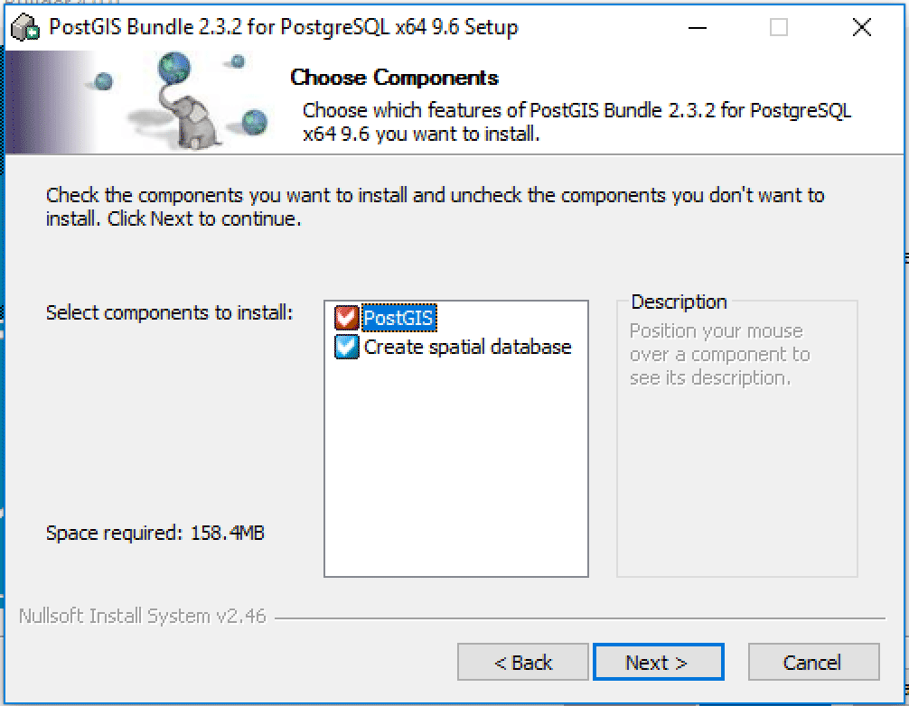
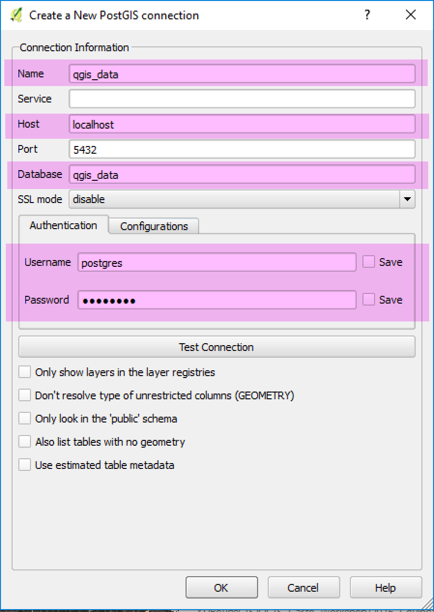

Make sure to read and execute all steps before installation. DO NOT mix with other installations.
The goal of this document is to help install a PostgreSQL database server on your local machine with the PostGIS extension. PostgreSQL is a popular, full-featured open source database server and PostGIS is the open source extension that adds spatial capabilities to the server. We refer to the setup as just PostGIS. Since it is server that continually runs on your machine, it's a little different than apps like QGIS. Let's outline a couple terms we use before we start the install.
Let's show the steps needed to install PostGIS on a Mac.
Step 01: Download the Postgres.app
Make sure to read and execute all steps before installation. DO NOT mix with other installations.
Step 03: Open the Applications > Utilities > Terminal.app and copy and paste the following statement:
sudo mkdir -p /etc/paths.d &&echo /Applications/Postgres.app/Contents/Versions/latest/bin | sudo tee /etc/paths.d/postgresapp
Hit the return key and you should see:

Step 04: You should see three databases with one for your Mac OS username. Double-click the one with your username which should open a new terminal window logging you into your database via the command line. Run the following three statements:
CREATE EXTENSION postgis;SELECT PostGIS_version();\q
If you see PostGIS version reported, you're all good:

Step 05: Open QGIS Browser Panel and right-click PostGIS > New Connection to access your new database

Step 06: Supply the following credentials. Since we didn't create a password then it is not needed.

Let's show the steps needed to install PostGIS on Windows OS.
Step 01: Download the latest PostgreSQL version from EnterpriseDB.com. At the time this tutorial was written, the current version was 9.6.

Step 02: Once installed, run Stack Builder to add the PostGIS extension:

Step 03: Connect to your server and press Next:

Step 04: Add the Spatial Extension PostGIS bundle and press Next:

Step 05: Might take awhile...

Step 06: Do not skip installation. Make sure the Skip installation is NOT checked and press Next:

Step 07: Select PostGIS and Create new spatial database and press Next:

Step 08: Add a password and press Next:

Step 09: Create a spatial database name and press Next:

Step 0510: Open QGIS Browser Panel and right-click PostGIS > New Connection to access your new database
Step 11: Add your credentials and database name you created from the previous steps:

We recommend using Ubuntu/Debian Linux distribution and using the Digital Ocean's tutorial.
Step 01: Open QGIS and add a vector layer to your Layers Panel. Then open DB Manager and select your database. Click on the Import vector layer table icon to add data to your database:
Step 02: Select an input layer and then click the Update options button. Always do this since the import tool will autocomplete the parameters for coordinate system, field names, etc. on import. In most cases, let's also enable the Convert field names to lowercase and Create spatial index options:

After import, look at the Table and Preview sections in DB Manager to verify your data was imported properly.
Finally, visit the Boundless Geo tutorial to learn how to setup your first database and do simple SQL. This tutorial uses their bundled software, so you can skip section 3.
On Windows, use the Boundless tuning instructions to modify the postgresql.conf in pgAdmin to tweak the performance of your spatial database. This is optional but a fun way to spend a Friday night!
One Mac and Ubuntu, follow Digital Ocean's tutorial to modify the config files to tweak the performance of the spatial database.